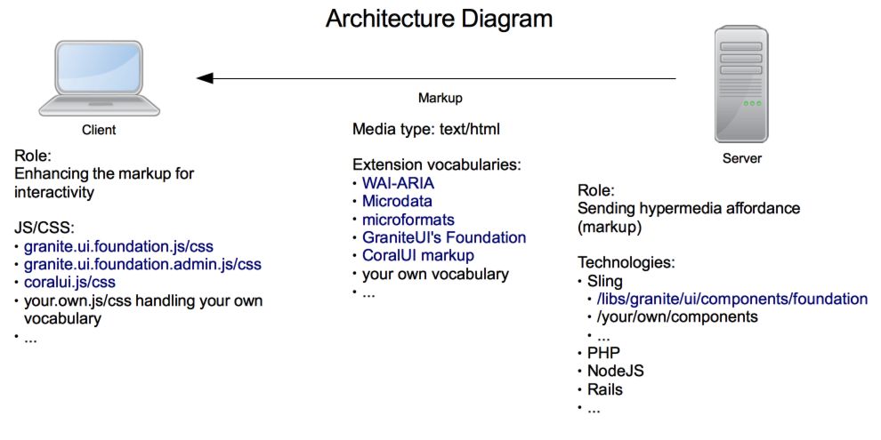

Granite UI: The Hypermedia-driven UI¶
Granite UI is an umbrella name for UI projects to build a LEGO® architecture for UI, so that one can build complex webapps with much less codes.
LEGO® Architecture¶
- modular, composable, layerable, reusable components
- independent evolution of components
- uniform way of doing things
This is achieved by leveraging proper REST, including the Hypermedia as the Engine of Application State constraint.
It consists of two parts: client-side and server-side, which can be used separately.
Client-side¶
An extension of HTML vocabulary such that the author can express her intention to build an interactive webapp. This is similar approach to WAI-ARIA and microformats. It is mainly a collection of interaction patterns (e.g. submitting form asynchronously, single-page app) that is interpreted by JS and CSS codes run in the client-side. The client-side’s role would be enhancing the markup—which is given as the Hypermedia affordance by the server—for interactivity.
The client-side is independent of any server technology. As long as the server is giving the appropriate markup, the client-side would be able to do its role.
Server-side¶
A collection of Sling components such that the author can compose a webapp fast. The developer develops components, the author assembles the components to be a webapp. The server-side’s role would be giving the Hypermedia affordance (markup) to the client.
Architecture Diagram¶
What is Hypermedia?¶
There are a lot of articles that explain the concept of hypermedia. Wikipedia article is a good example of that. But for the purpose of Granite UI, Roy Fielding’s definition is going to be used:
When I say hypertext, I mean the simultaneous presentation of information and controls such that the information becomes the affordance through which the user (or automaton) obtains choices and selects actions. Hypermedia is just an expansion on what text means to include temporal anchors within a media stream; most researchers have dropped the distinction.
Hypertext does not need to be HTML on a browser. Machines can follow links when they understand the data format and relationship types.
A good example to explain this is Interactive Voice Response:
- Call your bank service center, a voice machine greets you: “For English press 1; für Deutsch drücken Sie 2; pour le français, appuyez sur 3”
- You navigate the service to get what you want by pressing the phone’s buttons accordingly
- No need prior knowledge of the steps
- As human, you only need to understand the vocabulary (e.g. English) and how to use the phone
In REST speak, the bank service phone number is the bookmark URL; English is the vocabulary; the voice is the media type; the phone is the user agent.
World Wide Web is obviously another great example, with HTML as the media type and web browser as the user agent.
There are a few important points to understand.
- The server has a freedom to control its own URL structure. The server gives the affordance (e.g. HTML <a>, <form>; or URI Template) to the client on how to navigate or construct the URL.
- The client should not have a prior knowledge beyond the bookmark URL. After that transition from one state to another is driven by the available options chosen by the client.
- The client is programmed against the media type.
By doing this, the server is able to drive the client, just like the traffic policemen drive the traffic using traffic lights without reengineering the commuters. The server is then able to evolve.
See also Roy Fielding post on this.
How about Hypermedia-driven UI?¶
It is a UI that is following the hypermedia principles.
For example the following JavaScript code to do async form submission is very common in RIA today:
$(".myForm").submit(function(e) {
e.preventDefault();
var xhr = $.ajax({
type: "POST",
url: "myURL",
data: {
param1: "param1",
param2: "param2"
}
});
handleResponse(xhr);
});
The above code is against hypermedia as the client has prior knowledge about URL structure, which prevent the server to change it.
The hypermedia way to do this is to leverage the underlying media type:
<form class="foundation-form" data-foundation-form-ajax="true" method="post" action="myURL">
<input name="param1" value="param1">
<input name="param2" value="param2">
<!-- ... -->
</form>
The above HTML is generated by the server and is given to the client, where it has the following generic code to process it:
$(document).on("submit", "form.foundation-form", function(e) {
var form = $(this);
if (form.data("foundationFormAjax")) {
e.preventDefault();
var xhr = $.ajax({
type: form.prop("method"),
url: form.prop("action"),
contentType: form.prop("enctype"),
data: form.serialize()
});
handleResponse(xhr);
}
});
This way the server is able to drive the client, including when to sent that particular markup, in what configuration, or not at all.